Step-DeepResearch 技术报告
StepFun agent 团队
https://github.com/stepfun-ai/StepDeepResearch
2025-12-24
摘要
随着大语言模型（LLM）迈向自主 agent，Deep Research 已成为评估 agent 核心竞争力的重要指标。然而，现有工作主要关注 BrowseComp 等具有标准答案的学术多跳搜索任务，往往难以满足真实场景中用户对开放式研究任务的需求。开放式研究不仅要求强大的检索能力，还考验 agent 在隐含意图识别、长程决策、多轮工具使用、逻辑组织和跨来源核验方面的综合能力。为此，我们推出 Step-DeepResearch，一款高性价比的端到端 Deep Research agent 模型。我们提出一种新的基于原子能力的数据合成策略，旨在加强规划、信息搜寻、反思和报告写作等底层能力。在训练范式上，我们构建了一条从 agent 中期训练到监督微调，再到强化学习的渐进路径。结合清单式评判器的奖励设计，这种方法显著提升了模型在多种场景中的稳健性。此外，为弥补中文领域缺少能够反映真实需求的评估这一不足，我们建立了 ADR-Bench，一个面向真实 Deep Research 场景的中文基准。实验结果表明，仅有 32B 参数的 Step-DeepResearch 在 Scale AI ResearchRubrics 上取得了 61.42 的高分。在 ADR-Bench 的专家人工评估中，其 Elo 得分显著超过同类模型，并可与 OpenAI DeepResearch 和 Gemini DeepResearch 等最先进的专有服务相媲美。这些发现证明，通过精细的训练方案，中等规模模型也能获得专家级 Deep Research 能力。凭借极低的部署与推理成本，Step-DeepResearch 成为当前业内最具性价比的 Deep Research agent 模型。
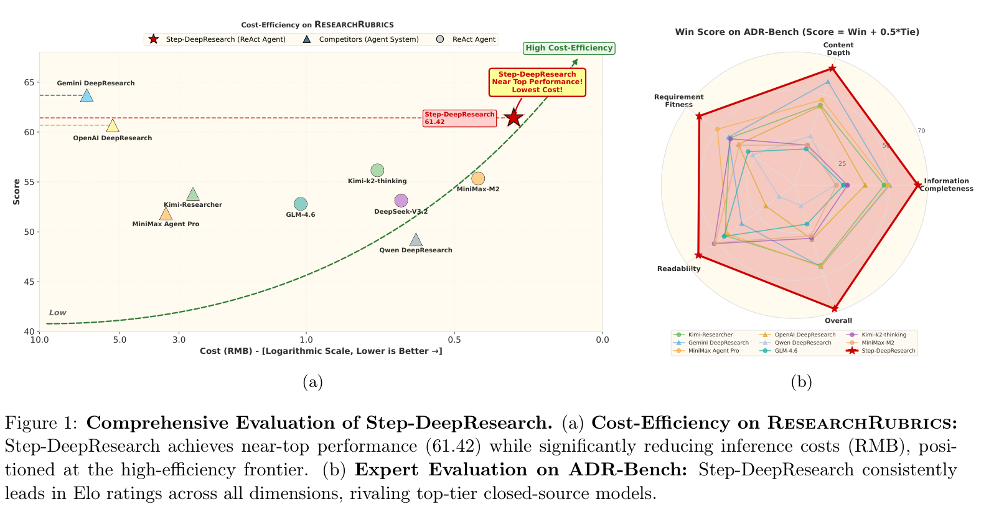
1 引言
大语言模型（LLM）正迅速推动 AI 系统从对话交互走向自主 agent。在这一更广泛的转变中，Deep Research——即 AI 系统处理开放式、长程且高度复杂的信息搜寻任务的能力——已成为通用 agent 的一项有用的“北极星”能力。OpenAI DeepResearch [1]、Gemini DeepResearch [2] 和 Kimi-Researcher [3] 等近期系统展示了 agent 式信息获取的潜力，同时也暴露了明显的局限。
搜索不等于研究。尽管产业进展迅速，基准表现与真实世界的实用性之间仍存在显著差距。一个核心原因在于任务定义不匹配：搜索并不等同于研究。搜索通常面向定义明确、具有确定答案的查询，并以检索准确率为优化目标。相比之下，研究是一个迭代过程，需要意图分解、规划、有效使用工具、跨来源核验，以及将信息综合成结构化报告。
以多跳问答驱动评估的局限。在实践中，多跳问答是评估 agent 系统的常用视角，也常成为事实上的优化目标。这种压力使 agent 偏向检索密集型行为。它们更像高效的网络爬虫，大规模收集零散事实，而不是把证据整合为连贯且经得起推敲的论证的研究者。因此，信息碎片化、推理链断裂，以及在噪声证据下产生幻觉，仍是 Deep Research 系统实际部署的主要障碍。
我们的观点。我们将 Deep Research 重新理解为围绕一组原子能力展开的长程决策，包括自适应规划、信息收集与跨来源核验、反思与纠错，以及创造性写作。从这一视角看，提升可用性更多地依赖于训练模型内化类似专家的认知循环，使其能随着任务推进自行检查和修正，而不是组装外部组件。
Step-DeepResearch。在这些原则指导下，我们提出 Step-DeepResearch，一个主要依靠模型原生能力实现稳健、实用的自主研究的端到端框架。我们的贡献如下：
- 原子能力数据合成。我们将 Deep Research 分解为可训练的原子能力，针对 agent 中期训练合成定向数据，覆盖领域知识、高层规划、行为反思、信息总结和跨来源核验。为缓解高价值推理数据稀缺的问题，我们进一步开发了基于知识图谱和专家轨迹的后训练数据合成流水线。这一设计旨在提高训练数据的信息密度和逻辑结构，并减少传统合成数据集中的能力缺失问题。
- 渐进式训练流水线。我们建立了从 agent 中期训练到监督微调，再到强化学习的实用优化路径。利用原子能力数据，我们将目标从“预测下一个 token”重塑为“决定下一个原子动作”；实证结果表明，这提升了模型在复杂环境中的稳健性，并加强了跨任务泛化能力。
- 应用驱动的评估套件。尽管现有基准（如 BrowseComp [4] 和 GAIA [5]）具有参考价值，但它们往往不足以捕捉真实用户需求。此外，面向 Deep Research 的高质量中文基准仍很有限。因此，我们构建了 ADR-Bench（应用驱动的深度研究基准），涵盖商业研究、政策分析和软件工程。ADR-Bench 将 Elo 式评级协议与多维质量标准相结合，以更好地衔接自动化指标和人类感知的实用性。
Step-DeepResearch 以 32B 参数在其规模下表现强劲。在 ADR-Bench 上，它在端到端研究中实现了很高的可用性。与许多依赖复杂多 agent 协调或重量级工作流的 Deep Research 系统不同，Step-DeepResearch 得益于已内化的原子能力，仅使用精简的 ReAct 式单 agent 设计。在基于专家的 Elo 评级中，它不仅超过 MiniMax-M2 [6]、GLM-4.6 [7] 和 DeepSeek-V3.2 [8] 等更大模型，也超过 Kimi-Researcher [3] 和 MiniMax Agent Pro [6] 等前沿 Deep Research 系统。在 ResearchRubrics 基准 [9] 上，Step-DeepResearch 在三档评分下达到 61.42 的评分标准符合度，表现与 OpenAI DeepResearch [1] 和 Gemini DeepResearch [2] 相当，并显著优于一系列开源和专有模型。这项工作表明，中等参数规模的模型也能达到专家级 Deep Research 能力。如图 1 所示，凭借低廉的部署与推理成本，Step-DeepResearch 已成为最具性价比的 Deep Research 系统。
2 相关工作
2.1 基于工作流的 Deep Research 实现
当前主流 Deep Research 系统采用通用基础模型，通过外部工作流编排获得研究能力。OpenAI DeepResearch [1] 将 o3-mini 推理模型与多步网页探索相结合，并采用异步任务管理。Gemini DeepResearch [2] 引入动态研究蓝图和交互式计划细化，利用 Gemini 2.0 Flash Thinking 的自我反思能力与 100 万 token 上下文窗口。Claude Research [10] 采用 agent 式方法开展多次相互递进的搜索，自动探索问题的不同角度。Perplexity Deep Research [11] 则整合了（接下页）
（接上页）Bing 式索引与 Sonar API，并结合 BM25 和稠密向量重排序。在开源框架方面，LangChain Open Deep Research [12] 提供“规划并执行”的架构，通过自我反思识别知识缺口。DeepResearchAgent [13] 采用分层多 agent 系统。Together AI Open Deep Research [14] 通过初始规划生成搜索查询，并利用 LLM 评估知识缺口。然而，这类系统本质上将预定义工作流模式硬编码进系统架构，对系统复杂度提出了很高要求。对于使用 ReAct 等方法实现的 agent，其在专业场景中的研究深度往往不足，难以满足用户的实际需求。
2.2 研究能力的端到端优化
与基于编排的系统不同，一些工作通过端到端训练将相关能力内化到模型中。DeepResearcher [15] 在真实网页环境中通过 GRPO 开展端到端 RL 训练，展示了规划、跨来源核验和自我反思等涌现的认知行为。Kimi-Researcher [3] 通过端到端 agent RL 训练支持长程、多轮搜索推理，并采用上下文管理机制和异步 rollout 系统。Tongyi DeepResearch [16] 提出统一的 agent 中期训练与后训练范式，将自动化数据合成流水线与 on-policy RL 相结合。相关 agent 训练方法工作也取得了进展，例如提出自主课程学习与 KL 约束策略更新的 WebRL [17]，以及采用 RL 增强搜索与推理融合的 Search-R1 [18]。
尽管如此，现有端到端工作仍主要关注提升“搜索效能”（如检索准确率、查询优化），缺乏针对深度研究至关重要的“原子核心能力”的系统构建策略，例如长程逻辑推理、多来源交叉验证与高质量报告撰写。此外，如何在保持高性能的同时优化模型规模和推理成本，仍是业界亟待解决的挑战。
2.3 Deep Research 相关评估基准
在评估方面，ResearchRubrics [9] 包含 101 个跨领域研究任务，每个任务配有 20–43 条专家撰写的细粒度评分标准，评估事实准确性、推理合理性和清晰度。DeepResearch Bench [19] 包含覆盖 22 个领域的 100 个博士级研究任务，通过 RACE 框架评估报告质量，通过 FACT 框架评估信息检索能力。ReportBench [20] 基于 arXiv 上的专家综述论文反向构建研究问题，评估生成报告的引用准确率和事实一致性。然而，除 ResearchRubrics 外，这些面向 Deep Research 的学术数据集在任务覆盖的全面性和评估深度上仍显不足，无法充分覆盖真实研究场景的多样化需求。
另一类基准更侧重检索与知识测试能力。BrowseComp [4] 包含 1,266 道需要多跳推理的事实查找问题，直接针对模型检索深藏信息的能力进行评估。HLE（Humanity’s Last Exam）[21] 包含跨学科的 2,500 道专家级问题，但仍带有浓厚的“闭卷考试”色彩，主要关注具有确定答案的多跳搜索或前沿知识测试，未能充分达到真实工业级研究场景的开放性和多维性。为此，我们构建 ADR-Bench，旨在填补由真实用户需求驱动的中文 Deep Research 场景评估空白。
3 数据策略：构建原子能力
Deep Research agent 的核心挑战在于弥合预训练与任务特定优化之间的决策鸿沟。在预训练阶段，模型获得海量世界知识和语言分布；然而，后训练阶段需要引导模型在庞大的动作空间中开展复杂的长程推理。
直接在原始 token 级空间 \(\mathcal{A}_{\mathrm{token}}\) 中探索，不仅计算开销高昂，而且由于分支因子随序列长度呈指数增长，容易使模型陷入局部最优。因此，我们提出统一的数据构建视角：将训练目标从“预测下一个 token”重塑为“决定下一个原子动作”。
我们将“原子能力”定义为一组可迁移的高层动作抽象，它们形成一个紧凑的动作子空间 \(\mathcal{A}_{\mathrm{atomic}}\subset\mathcal{A}_{\mathrm{token}}\)。我们将数据构建的目标形式化为寻找一个同时最小化两类误差的最优动作子空间：
\[\min\left(\epsilon_{\mathrm{pruning}}+\epsilon_{\mathrm{RL}}\right)\]
其中，\(\epsilon_{\mathrm{pruning}}\) 表示剪除潜在最优解造成的近似误差，\(\epsilon_{\mathrm{RL}}\) 表示随后在该子空间内开展规划或强化学习的难度。
为在“保留关键技能”与“规划逻辑清晰”之间实现 Pareto 最优，我们并非孤立地构建数据集，而是专门围绕四项核心原子能力建立查询合成流水线和轨迹生成策略：规划与任务分解、深度信息搜寻、反思与核验，以及报告撰写。
3.1 能力 I：规划与任务分解
规划能力要求模型将模糊或宽泛的用户请求有效分解为可执行的子任务，并根据环境反馈动态调整路径。为此，我们采用“逆向工程”策略，利用真实世界中已有的“完美规划结果”合成高复杂度规划数据。此外，为避免任务过于简单，我们对任务查询实施严格筛选。
3.1.1 逆向工程合成
为获得覆盖多个领域且具有真实逻辑深度的规划数据，我们利用开放获取的技术报告、学术综述和金融研报等高质量文档。这些文档本质上是复杂研究任务的最终产出，包含隐含的规划逻辑。
具体而言，我们首先取得报告的标题与摘要（或原文），移除具体实验细节和结果数据。随后，提示 LLM 逆向推导可能产生这份报告的初始“项目任务”，由此生成模拟真实科研和商业场景的高难度查询。同时，将摘要结构作为一种“后见信息”，合成指导整个研究过程的高层计划。这确保生成的规划路径具有极高的可行性与逻辑性，并在推理阶段为模型提供强约束。
最后，为确保数据质量，我们对生成数据实施轨迹一致性过滤。我们为 agent 生成执行轨迹，并计算其与预设计划的对齐程度，过滤掉虽完成任务但明显偏离预设计划的轨迹。这确保模型学到严格遵循已知后见信息的执行过程。
3.2 能力 II：深度搜索与信息搜寻
深度信息搜寻能力不同于简单问答；它要求模型具备多跳推理、挖掘隐藏实体，以及在信息不完整时主动进行拓扑游走的能力。我们通过基于图谱和多文档的合成流水线专门强化这项能力。
3.2.1 基于图谱的合成
为构建需要复杂推理路径的问题，我们在 Wikidata5m [22] 和 CN-DBpedia [23] 等开源知识图谱上进行受控子图采样。
我们采用特定的拓扑构建策略。首先，筛选度数较小（3–10）的非泛化实体作为“种子节点”，避免起点过于孤立或过于宽泛。随后，以种子为中心进行 BFS 扩展，构建包含 10–40 个节点的子图。为防止语义漂移，我们对度数超过阈值（如 1000）的超级节点强制截断，将其视为叶节点。
鉴于知识图谱中的三元组经常有信息损失，有时也已过时，我们不直接利用三元组生成问题。相反，对于子图中的每条边，我们将三元组作为查询进行额外搜索，核验并忠实扩展其信息。最后，基于这一经过验证且结构合理的子图，提示 LLM 生成一个经过模糊化处理、需要多跳搜索与推理的复杂问题及其对应答案。
3.2.2 基于多文档的合成
针对文档间关联检索的能力，我们使用自建索引库 Wiki-doc。利用其天然超链接结构，从一个随机实体出发，通过 few-shot 提示词引导网页搜索 agent 在文档索引中进行拓扑游走。
agent 需要在事先不知道目标的情况下沿超链接挖掘信息，直到达到最大步数或收集到足够信息。最后，我们整合沿途收集的所有节点信息，反向生成 ⟨查询，答案⟩ 对。
3.2.3 难度过滤
为确保规划任务并非简单任务，我们使用 QwQ-32b [24] 作为难度过滤模型。凡是 QwQ-32b 在默认 ReAct 框架下能够解决的查询，都被视为“简单问题”，并从训练集中排除。由于 QwQ-32b 与本工作所用模型共享相同的基础模型和预训练知识，但未接受大量 agent 专项训练，因此 QwQ-32b 能够解决的任务可视为无需专门训练的简单任务。
3.3 能力 III：反思、核验与交叉验证
在长程推理中，模型必须能够识别自身错误（自我纠错），并辨别互联网信息的真伪（事实核查）。我们设计了专门的闭环流水线来生成此类数据。
3.3.1 错误反思循环
对于深度信息搜寻查询，我们采用“专家模型生成 → 结果验证 → 多轮反思”的闭环过程，生成高质量思考轨迹。该过程旨在通过对失败路径的内省，提升模型在复杂检索环境中的抗干扰能力和交叉验证水平。
具体合成流程如下。专家级模型生成初步搜索与推理轨迹。如果最终输出与答案一致，该轨迹直接作为正样本纳入训练集。如果结果不符，我们构建提示词，要求模型根据错误结果执行反思动作。模型依据反思结论保留历史记忆，并重新尝试生成轨迹；这一过程最多迭代 3 次。
对于经过反思最终得出正确答案的轨迹，我们进行专门的后处理清洗。移除“根据用户提示”等带有人为诱导痕迹的措辞，确保输出表现为模型完全自发的内省与纠错过程。这一策略不仅加强了收集未知信息的能力，也教会模型通过对比多个来源筛除不可靠的互联网数据，显著降低最终报告中的事实偏差。
3.3.2 深度核验工作流
为加强模型在复杂研究任务中的事实严谨性，我们从脱敏真实数据中清洗出数千个 ⟨段落，判定结果⟩ 对，作为种子样本。我们构建了一个多 agent 教师工作流，模拟人类专家的核验过程，并将完整执行路径记录为 agent 轨迹。系统由以下协作的原子 agent 构成：
- Extract Agent：分析输入材料并进行事实分解。从自然语言描述中提取时间、地点、主体、核心数据和因果事件，将它们转换为独立核验点。
- Plan Agent：生成初步行动计划。分析提取 agent 产出的每个核验点的核验必要性及所需来源类型，并根据逻辑依赖关系生成计划。
- Verify Agent：执行具体核验动作。调用搜索工具和模型，对内容进行多来源检索与交叉验证。
- Replan Agent：执行动态路径调整。总结当前已获得的信息，及时调整研究方向，显著减少冗余搜索，并提升复杂路径下的决策质量。
- Report Agent：汇总全过程的证据。对每个核验点给出明确的最终结论（支持、反驳或存疑），并附上完整的引用证据。
生成的核验轨迹经过严格的事后过滤。我们将核验点、结论与证据作为一个三元组输入评判模型，验证报告结论与证据在逻辑上是否自洽，确保模型学到事实准确且逻辑严密的核验范式。
3.4 能力 IV：报告生成
报告写作并非单纯的文本生成，而是对已收集的碎片信息进行结构化重组的过程。我们将这项能力的训练分为中期训练阶段与 SFT 阶段：前者侧重领域风格和内容深度，后者侧重指令遵循和格式规范。
3.4.1 中期训练：领域风格与内容深度
在中期训练阶段，目标是让模型内化专家级写作框架与术语风格。我们构建了大规模 ⟨查询，报告⟩ 对。数据来自严格筛选的高质量人工报告（如金融研报和深度综述），查询则通过前述逆向工程方法获得。在这一阶段，模型重点学习如何在给定项目任务的语境下，像专家一样组织语言、引用数据并展开深入论证，而不关注具体的搜索过程。
3.4.2 SFT：指令遵循与格式规范
在 SFT 阶段，重点转向对用户特定约束的指令遵循和规划一致性。对于元数据中包含计划的 Deep Research 查询，我们要求模型生成的报告严格遵循预设计划结构。我们生成轨迹，并检查其与计划的对齐情况，过滤掉偏离的样本。对于轨迹生成质量较高但报告格式较差的样本，我们采用专门的系统提示词，根据最后一轮状态重新生成报告，确保最终输出不仅内容详尽，也能在指令遵循和格式方面精确回应用户需求。
4 训练流水线
我们在一个 320 亿参数的基础模型之上采用渐进式三阶段训练流水线，依次进行中期训练、监督微调（SFT）和强化学习（RL），系统提升模型在复杂推理与长程 agent 任务中的整体表现。这种训练设计在能力扩展、行为对齐和目标优化之间建立了清晰分工。具体而言，中期训练阶段引入高质量原子能力数据，包括规划与任务分解、深度搜索与信息搜寻、反思与核验，以及报告生成能力。在随后的 SFT 阶段，这些原子能力被组合起来，同时对指令遵循、输出结构和任务特定格式施加显式约束并进行对齐。最后，在 RL 阶段引入任务级反馈信号，进一步优化模型在真实交互与决策场景中的行为质量。
我们选择 Qwen2.5-32B-Base [25] 作为基础模型，以平衡性能、计算成本和实验可复现性。这一选择既保留了接近大规模模型的核心能力与长上下文支持，又显著降低了多阶段训练和系统性消融研究的门槛。因此，本工作观察到的性能提升可以更直接地归因于所提出的训练范式和数据策略，确保更清晰的可解释性与可复现性。作为中等规模模型，Qwen2.5-32B-Base 展现了可与 72B 模型媲美的核心能力，如强大的指令遵循和逻辑推理，并支持最长 128k 的上下文，非常适合长程 agent 任务。同时，32B 参数规模显著降低了训练成本，而且既有微调工作已证明该模型具有很强的可塑性。使用 Qwen2.5-32B-Base 作为基础模型，确保 Deep Research 场景下报告的性能增益客观地来源于数据策略和训练范式，从而便利社区复现和公平比较。
4.1 阶段 1：agent 中期训练
为在不显著增加参数规模的情况下，系统提升模型在复杂任务中的长上下文理解、知识整合和工具增强推理能力，我们在预训练与指令微调之间引入一个包含两个阶段的中期训练过程。这一阶段通过精心构建的数据分布与上下文长度调度，使模型逐步适应更复杂、更长序列的任务，促使稳定的中长程推理以及任务分解与执行能力涌现。
总体上，中期训练遵循从短上下文到长上下文、从纯知识型任务到工具增强任务的课程，分为两个阶段：第一阶段支持最大 32K 上下文，第二阶段将该能力扩展到 128K。
中期训练（32K 上下文）。第一阶段中期训练侧重注入规划与任务分解、信息搜寻、反思与核验，以及报告生成等原子能力。本阶段旨在显著提升模型在中等长度上下文中理解和执行复杂任务结构的能力。这一阶段不直接优化任务完成率，而是强调系统构建高质量、面向能力的数据，使模型在规划、证据整合和自我纠错等关键维度上形成稳定、可泛化的中间表征。这些表征（接下页）
（接上页）为随后涉及更长上下文和真实交互式 agent 任务的训练阶段奠定坚实基础。本阶段训练数据主要覆盖规划、信息搜寻、反思与报告生成等能力维度，详细组成见表 1。
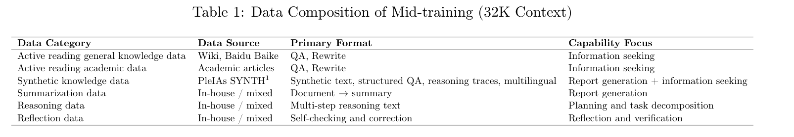
其中，学术主动阅读数据模拟模型阅读长篇学术文档时的真实认知过程，引导它学习如何从大量文本中识别关键信息，并通过问答和改写任务形成有效的内部知识表征。这一阶段不引入显式工具调用，确保模型在纯文本条件下形成稳健的理解与推理能力。
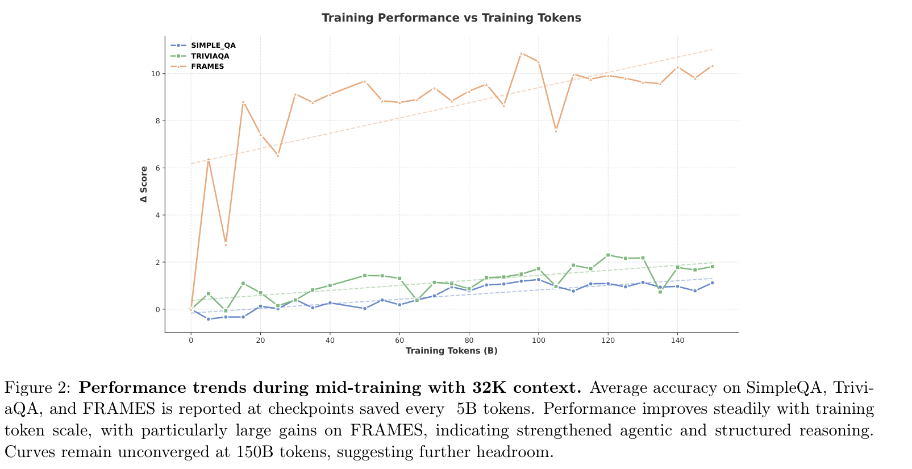
如图 2 所示，训练期间约每 50 亿 token 保存一次 checkpoint，并在阶段 1 总计 1500 亿 token 的中期训练全过程中分析性能增益。结果表明，随着训练数据规模增加，模型在 SimpleQA、TriviaQA 和 FRAMES 基准上的性能持续提升。观察到的最大提升分别约为 SimpleQA +1.26%、TriviaQA +2.30%、FRAMES +10.88%。总体而言，32K 中期训练阶段在 1500 亿 token 规模下仍未完全收敛，表明还有显著提升空间，尤其是在 agent 相关能力和结构化推理能力上。
中期训练（128K 上下文）。在阶段 1 所实现的能力稳定收敛基础上，第二阶段中期训练将最大上下文长度进一步扩展到 128K，主要聚焦真实世界复杂任务场景。本阶段加强模型在超长上下文下的检索、规划和工具增强推理能力。训练数据更贴近实际应用，覆盖网页交互、搜索过程和多工具协作等复杂结构。详细数据组成汇总于表 2。
通过在这一阶段引入显式工具调用，模型不仅需要生成连贯的中间推理过程，还要学习何时、如何选择并调用外部工具，以及将返回结果整合到后续推理中。这显著提升了模型在 agent 式任务中的实际效果。
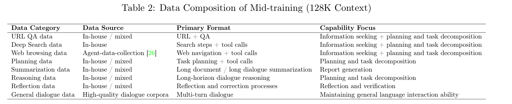
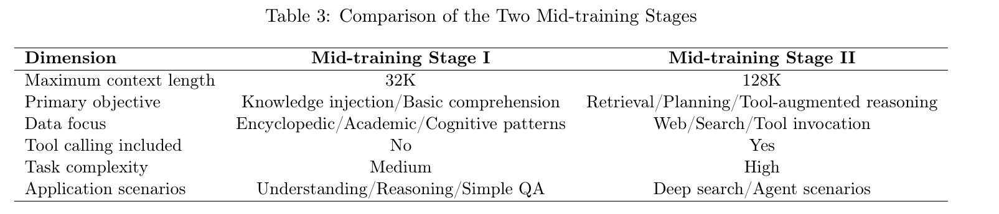
为更清晰地说明两个中期训练阶段的设计差异与递进关系，表 3 对比了关键维度。
4.2 阶段 2：后训练中的监督微调
在中期训练阶段，模型已具备规划、信息搜寻等基础原子能力。在后训练的监督微调（SFT）阶段，重点从孤立能力的教学转向这些原子能力的组合，以改善长程任务的端到端表现。本阶段的核心目标是领域适配与性能提升：利用经过严格清洗的高质量全链路轨迹，将模型已有的原子能力系统串联，形成高效、稳健且深度对齐 Deep Research 场景需求的行为模式。
SFT 数据组成。SFT 数据集主要由两类端到端任务轨迹组成：深度搜索与深度研究。
- 深度搜索数据。这一类聚焦具有明确标准答案的多跳搜索任务。虽然中期训练阶段已引入部分深度搜索轨迹以建立基础检索与推理能力，但 SFT 阶段强调性能优化与风格多样性。我们选择查询分布均匀的高质量轨迹，引入多样化推理模式，使模型能针对不同查询灵活选择最优推理路径。这带来从“能够检索到正确信息”到“高效、准确地检索信息”的质变。
- 深度研究数据。这一类面向涉及开放式问题的综合研究任务。数据覆盖在严格格式要求（如引用和来源归属）下的意图理解、规划、信息交叉核验与报告生成全流程。通过这一设计，强化“意图分析—规划—执行—反思—写作”的完整端到端逻辑。
数据构建与清洗策略。SFT 的效果高度依赖数据质量。为此，我们构建精细化数据流水线，采用严格规则和算法过滤，确保高质量监督。代表性策略包括：
- 轨迹效率优化。针对有标准答案的深度搜索任务，数据清洗采用“正确且最短”原则。在所有成功轨迹中，仅保留推理步骤最少、工具使用最精简的轨迹。这鼓励模型以有效推理替代冗余搜索，以最小成本获取信息，从而消除不必要的工具调用。
- 稳健性与噪声控制。刻意保留受控比例的含工具调用错误轨迹，例如搜索结果为空或工具失败后进行了正确反思与纠错的轨迹。这种结构化噪声注入可避免模型在真实网络不稳定时崩溃，并赋予它处理异常情况的自我纠错能力。
- 认知模式去重。应用严格的基于 N-gram 的去重机制，识别并移除过度重复或退化循环的低质量轨迹，确保模型在长程工具使用中的推理行为具有多样性和灵活性。
- 严格的引用与事实对齐。为满足 Deep Research 报告的严谨性要求，我们在 SFT 数据中显式加入
\cite{}引用格式。这一构建方式引导模型采用在关键信息点附上相关参考文献的写作范式，确保可追溯性与事实依据，并使输出格式符合专业研究标准。
4.3 阶段 3：强化学习
在前两个阶段，训练过程主要依靠大规模合成与蒸馏数据进行中期训练和监督微调（SFT）。尽管这种方法对指令遵循任务和基础工具使用有效，但它主要依赖“教师”轨迹，无法通过真实交互中的试错学习得到提升。因此，我们引入强化学习（RL），将模型直接连接到真实工具使用环境，并通过与环境交互进行优化。不同于聚焦实体匹配的短程搜索，Deep Research 报告的质量取决于多个维度，包括任务分解、规划、工具调用策略、证据选择与验证，以及最终报告生成。近期的一种方法是将报告质量评估转换为一组基于评分标准的分数，再将其用作优化信号 [27]。这种基于评分标准的强化学习增强了模型主动规划、反思与跨来源验证的能力，克服离线模仿的局限，显著提升性能与用户体验。
4.3.1 RL 数据合成
虽然小规模基准测试可以依赖专家定义的评分标准 [9]，但由于高质量评分标准难以收集且成本高昂，强化学习训练仍然需要数据合成过程。
两步逆向合成。为生成 Deep Research 任务及其对应评分标准，我们采用“两步逆向合成”方法。传统正向提取方法通常通过改写或分解用户查询来导出评分标准。然而，这些方法往往依赖表层表达，可能忽略任务中隐含的关键质量维度。因此，我们设计了更精细的合成过程：
- 第一步，在少量高质量示例和模板指导下，利用强大的 LLM 生成初始任务描述（称为隐藏任务摘要），同时生成一组细粒度评分标准。每条标准均定义为包含评估维度和重要性权重的原子标准，确保其具体、可验证，并能实际用于任务评估。此外，每条标准被分配一个角色，指出它是显式、隐式还是负向要求，分别对应是否需要在任务中明确陈述，或作为加分项或扣分项。
- 第二步，基于合成的评分标准生成目标任务（即实际用户任务查询）。在这一过程中，同时重新评估每条标准对合成任务所扮演的角色，并提供简短的推理和归因。如果初始与最终的角色分配存在任何不一致，则丢弃整个合成样本。这确保合成任务查询与评分标准要求对齐，在语义上支持其中的关键维度，并覆盖显式和隐式任务要求。
目标一致性验证。为确保逆向合成过程中任务的目标与要求保持一致，我们实施目标一致性验证步骤，检查隐藏任务摘要、评分标准与合成任务之间的一致性。该过程由独立评判模型完成，评估隐藏任务摘要与合成任务的一致性，以及评分标准与任务要求的对齐程度。评判模型评估每条标准的相关性，确保其不与任务目标矛盾。最后，它给出总体一致性分数，决定是否保留样本。这一步确保后续强化学习训练获得高质量任务样本与可靠监督信号。
4.3.2 奖励设计
评分标准评判器训练。在 Deep Research 报告场景中，如果直接依靠大型 LLM 对每份报告按完整评分标准逐项打细粒度分数，每个样本需要进行数十次推理才能覆盖所有评估维度。在大规模 agent RL 训练中，这会产生难以承受的计算成本和延迟。根据我们的观察，相比评判模型自身的绝对性能，评分标准的质量往往更能决定 LLM 评判器的标注是否与人类专家一致。
因此，我们首先使用强模型，对构建的 ⟨查询，评分标准，报告⟩ 三元组生成分数与解释，再将其作为监督信号训练评分标准评判模型。该模型经历监督微调和可验证奖励强化学习两个训练阶段。前者旨在让模型学习强模型的评分逻辑和解释风格，建立基础判别能力；（接下页）
（接上页）后者进一步强化模型输出格式的一致性和评分逻辑的稳健性。最终，这个评分标准评判器成为本阶段主要的奖励提供者，使我们能够在不牺牲信号质量的前提下，以可接受的预算支持大规模 agent RL 训练。
严格奖励映射。在最初尝试基于评分标准评估报告时，我们将每条标准的判定分为“完全满足”“部分满足”和“不满足”三类，直接映射为三档判定 \(\{1,0.5,0\}\)。然而，我们发现，不同强模型（作为 LLM 评判器）之间，以及 LLM 评判器与人类专家之间，在“部分满足”类别上的一致程度较低。这种中间类别的不一致可能造成奖励信号不稳定，难以提供一致的优化方向，并削弱模型遵守约束的能力。为确保奖励信号更有区分度，我们根据评分标准的性质，将三档判定转换为二元信号：
- 对于正向评分标准：将“完全满足”映射为 1，将“部分满足”与“不满足”统一为 0。这强调“不完全满足就不给奖励”的原则，防止模型利用低质量生成获取奖励。
- 对于负向评分标准：将“不满足”映射为 0，将“部分满足”与“完全满足”统一为 1。这确保任何偏离期望结果的情况都会受罚，帮助模型避免不期望的行为。
报告的最终奖励综合考虑每条标准的判定及其对应权重（可为正或负）。这种非对称二元映射消除了中间类别的噪声，使奖励信号更具判别力，并加速模型向与专家对齐的行为收敛。
4.3.3 agent 强化学习
带工具的真实世界环境。为使 agent 真正学会在现实约束下完成深度研究任务，我们在强化学习阶段将其置于多工具交互环境中。在此环境中，agent 可以自由切换自然语言生成与工具调用。为控制成本，我们对高开销网页检索引入缓存机制，对相同查询复用结果，并对工具调用次数和总 token 消耗设置显式预算，确保训练在可预测的资源范围内运行。每个深度研究任务被视为一个强化学习回合。agent 首先进行意图分析并重述用户查询，随后生成逐步计划，围绕不同子问题组织工具调用与信息收集。之后，它筛选、对比并交叉验证多来源证据，最终起草完整报告。回合结束后，评分标准评判器依据预定义标准评估报告，产生多维分数，经严格奖励映射转换为用于策略更新的奖励信号。通过迭代这一过程，模型持续在真实环境中试错学习，逐步获得在工具选择、调用时机和调用顺序上更符合人类专家偏好的策略决策。
PPO 算法。我们将深度研究 agent 在多工具环境中的行为建模为由单一策略 \(\pi_\theta\) 控制的序列决策过程。在每个时间步 \(t\)，给定包含用户请求、已生成 token 历史和工具返回观测的状态 \(s_t\)，策略输出动作 \(a_t\)。这里的动作既包括自然语言 token 生成，也包括发起工具调用、指定工具参数和解析工具输出等结构化决策。一次完整交互产生轨迹 \(\tau=\{(s_t,a_t)\}_{t=1}^{T}\)，在回合终止时，评分标准评判器赋予终局奖励 \(R(\tau)\)。在此定义下，我们使用截断的近端策略优化（PPO）目标进行 on-policy 优化：
\[\max_\theta\;\mathcal{J}(\theta)=\mathbb{E}_{\tau\sim\pi_{\theta_{\mathrm{old}}}}\!\left[\sum_{t=1}^{T}\min\!\left(r_t(\theta)\hat A_t,\operatorname{clip}(r_t(\theta),1-\epsilon,1+\epsilon)\hat A_t\right)\right].\tag{1}\]
其中，重要性比率为
\[r_t(\theta)=\frac{\pi_\theta(a_t\mid s_t)}{\pi_{\theta_{\mathrm{old}}}(a_t\mid s_t)}.\tag{2}\]
该目标利用 \(\epsilon\) 截断显式限制每次更新造成的策略偏移，从而在长程序列生成与稀疏终局奖励的场景中保持训练稳定。对于优势估计，我们使用广义优势估计（GAE）：
\[\hat A_t^{\mathrm{GAE}(\gamma,\lambda)}=\sum_{l=0}^{T-t}(\gamma\lambda)^l\delta_{t+l},\qquad \delta_t=r_t+\gamma V_\phi(s_{t+1})-V_\phi(s_t).\tag{3}\]
与 Open-Reasoner-Zero 的工程实践一致，我们在 GAE 中设定 \(\gamma=1\)、\(\lambda=1\)，即既不对未来回报进行折扣，也不施加额外的指数平滑。这一选择显著简化并加速了稀疏奖励长程序列中的信用分配计算。
我们选择 PPO 而不是无需 critic 的策略 gradient 变体，主要是因为学习得到的 critic 能提供更可靠的 token 级价值估计。Open-Reasoner-Zero 的系统分析表明，critic 能识别重复循环等有害模式并降低其权重，从而产生更稳健的优势估计并改善训练稳定性。相比之下，没有显式价值函数的方法更难区分“偶然得到的高回报”和伴随不良行为的回报，可能导致错误强化与不稳定。这一点对 agent 场景和深度研究任务尤为重要：报告生成通常涉及长程过程、跨来源检索和多轮工具使用。如果无法将单一的、基于评分标准的终局奖励细粒度地分配给中间决策（如检索策略、证据选择、交叉验证和结构化写作），策略更新就容易退化为粗粒度的“整体好／坏”拟合。PPO 的 actor–critic 结构通过提供可用于学习的 token 级信号，直接满足这一需求。
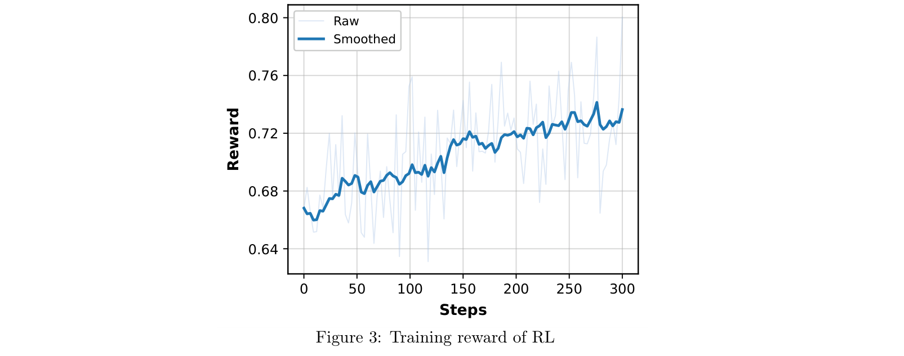
训练动态。RL 过程的训练动态见图 3。随着训练推进，奖励曲线持续上升，表明 agent 正在任务分布内有效优化其策略。
5 系统架构
Step-DeepResearch 采用遵循 ReAct 范式的基础单 agent 架构，将复杂 Deep Research 任务重构为动态的“推理—行动—观测”循环。如图 4 所示，收到用户查询后，agent 通过显式推理和工具调用启动认知迭代过程，循环经历三个核心阶段。
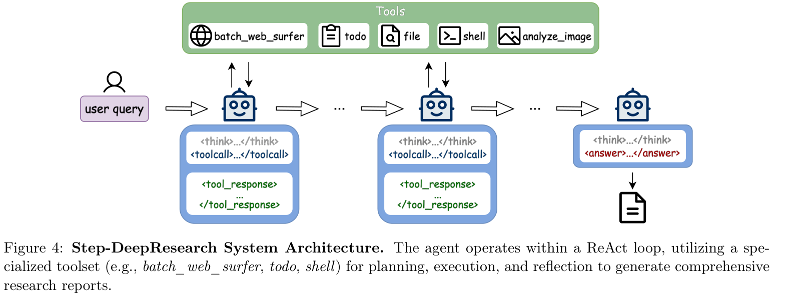
规划与反思。agent 首先识别用户意图以制定行动计划。在后续轮次中，它会自发回顾先前结果，对照目标验证当前状态，实现动态自我纠错。
工具执行。agent 将计划转化为具体动作，选择最适合的工具集（如用于搜索的 batch_web_surfer、用于跟踪的 todo），发起精确的数据获取请求。
反馈与交叉验证。新的工具响应被注入下一轮推理。agent 对照历史上下文开展交叉验证，解决冲突、过滤虚假信息，从而构建逻辑严谨的证据链。
这一机制使 agent 能自主决定探索深度，直至生成最终报告。为支持这类具有长程推理、强交互和高不确定性的 Deep Research 任务，我们设计了统一工具系统。该系统遵循若干指导原则，包括复用人类交互逻辑、结构化反馈信息、保留原始交互方式，以及通过分层抽象统一工具执行，并与 agent 执行循环相交织。核心设计理念包括：能力对齐，提供与人类在计算机上开展研究任务时相当的操作能力；信息适配，强调结构化、完整且信息密度高的工具输出，同时显式考虑上下文窗口约束与失败恢复；以及架构简化，在保持灵活性与表达力的同时尽可能合并功能相近的工具。以下详述该基础设施的核心组成部分：
权威性增强的信息获取。为解决海量互联网数据中的信噪比失衡与权威性稀释，我们构建了高质量信息检索系统。
- 精选权威索引：我们组建专业团队评估各类在线来源，筛选了超过 600 个核心权威网站，涵盖政府官方域名、行业研究机构、国际组织与领先学术平台。我们为这些网站建立独立索引分片，在物理与逻辑层面将权威内容和低质量 SEO 垃圾信息隔离，显著提升召回稳定性。
- 知识密集型文档检索：面向专业文献、金融报告和官方白皮书等长篇文档，系统使用包含超过 2000 万份高质量资料的专用库。索引采用段落级粒度，以避免整篇文档摄入带来的噪声。通过召回特定语义段落，模型以更低 token 成本获得更高密度信息。
- 感知权威性的排序启发式：在排序阶段，系统融入权威性提升因子。当语义相关性分数相近时，算法优先选择权威网站内容，确保研究论证建立在可验证事实之上。此外，定制搜索参数接口使系统能根据查询意图动态调整搜索行为。
知识管理与文件操作。我们将文件系统视为外部持久记忆，把传统文件交互改造为 agent 原生协议。这种转变严格由长上下文工作流中对 token 效率与稳健性的需求驱动。
- 节省 token 的补丁式编辑：为减少全文重写造成的 token 浪费，以及 diff 格式给中型模型带来的推理负担，我们引入
patch动作。agent 只需提供修改片段及最少量锚点上下文，由工具通过模糊匹配执行原子更新。在长篇报告局部润色场景中，这使输出 token 成本降低超过 70%，并显著提高复杂编辑的成功率。 - 隐式上下文管理：为消除检索内容过多导致上下文窗口溢出的风险，我们设计了感知摘要的本地存储策略。当工具结果超过预设阈值时，系统截断即时返回内容，仅将高密度摘要注入上下文，同时将原始数据持久化到本地临时文件。agent 根据摘要线索，通过
file.read按需调页。这一设计有效地将上下文压力卸载到磁盘，为长程推理提供近乎无限的上下文支持。 - 有状态待办管理：为防止长程研究中的目标漂移，
todo工具将复杂 CRUD 操作封装在统一入口中。它依据当前任务栈自动判断“创建、重写或销毁”状态。通过将研究进度与模型权重解耦，并持久化到工具层，确保长交互轨迹中的逻辑一致性与目标对齐。
交互执行与多模态感知。为弥合原始执行与专家级问题解决之间的差距，我们开发了高保真交互框架，并集成全面的多模态感知套件。这一配置确保 agent 能够精确且灵活地处理复杂数字任务。
- 类人的终端交互（沙箱与 Tmux 集成）：所有执行命令均运行在（接下页）
（接上页）受限的 MCP 沙箱环境中。系统集成 tmux 会话管理机制；通过维护持久的回滚缓冲区，agent 能稳定操作具有状态刷新特性的命令行程序（如 vim 编辑器或实时监控工具）。这赋予 agent 在面对复杂错误时类似人类的交互调试能力，增强系统级容错性。
- 面向感知优化的稳健浏览器：我们专门针对研究任务引入视觉冗余消除策略。系统计算连续动作的网页截图之间的 PHash（感知哈希）距离，动态识别视觉差异。当页面更新微小时，系统抑制图像反馈，转为纯文本流。这一策略确保 agent 实时掌握页面状态，同时显著减少多模态 token 冗余。
- 多模态感知工具：对于非结构化数据，我们集成了专用模块，包括
file_parser（文档解析）、asr（音频转录）和analyze_image（图像分析），确保高质量理解复杂研究材料。
6 ADR-Bench：自建深度研究基准
作为面向复杂、开放式研究任务的产品，Deep Research 长期面临评估障碍，包括标准不一致、固有主观性以及较高专业门槛。为科学、高效地指导模型迭代，并反映真实用户感知，我们实施了覆盖通用领域用户体验和专业领域能力考核的双轨评估框架。本章系统总结基准构建和评估设计过程中形成的核心方法、关键发现与实践经验，详细说明查询组成、评估框架架构和标准制定，以及所遇挑战和探索尝试，旨在为类似复杂任务的评估提供参考。
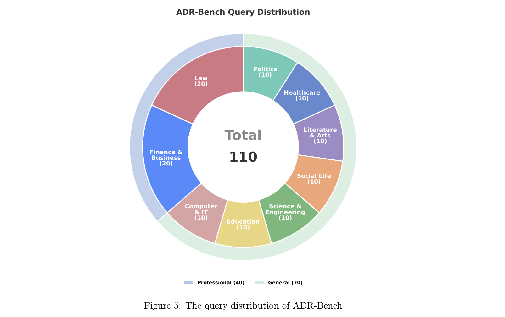
6.1 查询组成
我们全面调研了用户日常使用 Deep Research 的场景，获得了由领域专家起草的初始查询集。通过多轮测试，筛选并修订了不完全适用于 Deep Research 任务的查询。依据真实业务中查询的分布，我们将用户查询分为九个领域：法律、计算机与信息技术、教育、金融与商业、科学与工程、社会生活、文学与艺术、医疗健康，以及政治。
为构建更严谨的评估框架、更好评估 Deep Research 的表现，我们将这些领域组织为通用和专业两条主要赛道。法律与金融被选为代表性的专业领域类别。对于这两类，领域专家同时制定查询及其对应评分标准，并进行严格交叉验证。每个领域包含 20 个专业查询。其余七个领域被视为通用领域任务，我们从真实业务场景收集实际查询，再人工挑选高质量、多样且具有代表性的样本，每个领域分配 10 个查询。各领域整体查询分布见图 5。
6.2 评估框架
我们对通用领域和专业领域查询采用不同评估策略。通用领域的用户问题通常是开放式的，范围宽泛，没有唯一标准答案。因此，难以通过完全枚举的评分标准客观刻画报告质量。我们因而采用人工比较评估。具体而言，对于每项任务，将不同模型生成的两份报告以盲审方式呈现给评估者。评估者给出五类判断之一——“左侧更好／右侧更好／两者都好／两者一般／两者都差”——并从信息完整性、内容深度、需求契合度和可读性四个子维度评分，附上详细书面理由。与绝对评分相比，比较评估引入了参考锚点，有效减少开放领域场景中质量标准模糊带来的不确定性，更准确捕捉用户对报告质量的主观感知。为确保可靠性和一致性，我们对评估者进行系统培训，统一整体和子维度评分标准，并规范盲审流程。这尽量降低个人偏好的影响，提高评估结论的可信度。
在专业领域评估中，我们选择金融与法律作为代表，评估模型生成专家级报告的能力。鉴于这些任务需要专业领域知识和复杂推理，单靠人工比较评审难以满足快速模型迭代的需要，因为成本较高、效率受限。因此，我们采用基于评分标准的自动评估方法：由领域专家设计具有代表性、相对受限的真实任务，通过多轮专家交叉验证，迭代核验和完善评分标准。这些高质量、可枚举的标准确保全面覆盖专业报告应具备的关键要素，使我们能严谨地衡量模型的专业胜任力与知识熟练度。
总体上，所提出的评估框架在通用领域使用中捕捉真实操作环境下感知到的模型质量差异，同时在专业领域利用高质量评分标准监测专业能力。这种方法平衡了科学严谨性、操作可行性和迭代效率。未来将探索更可扩展的评估方法，应对模型性能趋同时区分能力下降和评估成本上升的问题。
6.3 评估标准
基于上述评估框架，我们对自身模型与相关业界竞争者开展了比较评估。本节介绍具体评估标准及其制定背后的策略考虑。
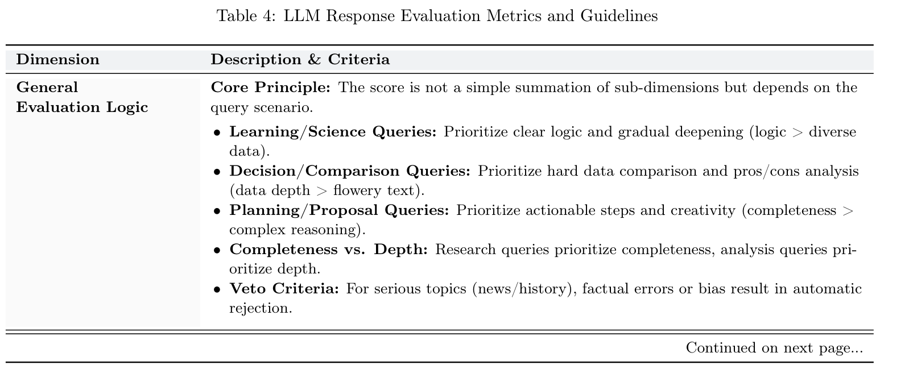
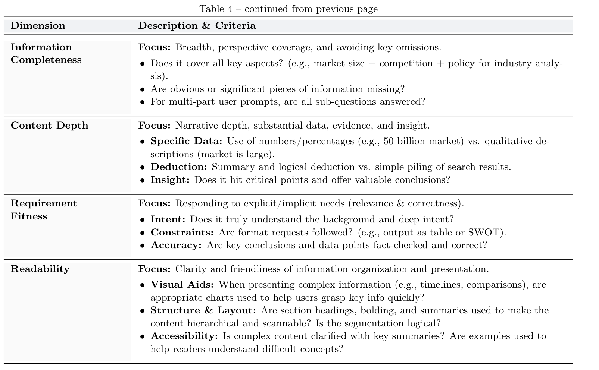
通用领域比较评估所用标准的简化版本见表 4。需要指出的是，在 Deep Research 这类开放式长篇评估任务中，准确性维度难以可靠验证，而且这种验证会产生大量额外人力与时间成本。因此，我们只要求评估者核验与任务要求直接相关、且实质影响报告质量的关键结论或数据点，并将这一要求纳入“与用户需求对齐”维度。
此外，对于具体任务，各评估维度在实践中无法完全解耦，因此我们要求评估者在给某一维度评分时，只关注与该维度有关的标准，不考虑其他维度。对于专业领域，我们要求专家整理解空间相对有限、具有某些核心共性的问题。评分标准必须遵循表 5 总结的五项核心原则。
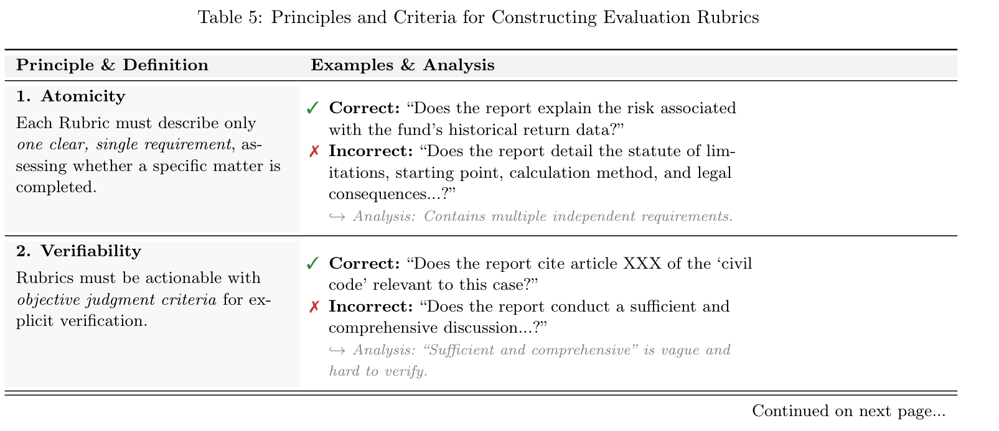
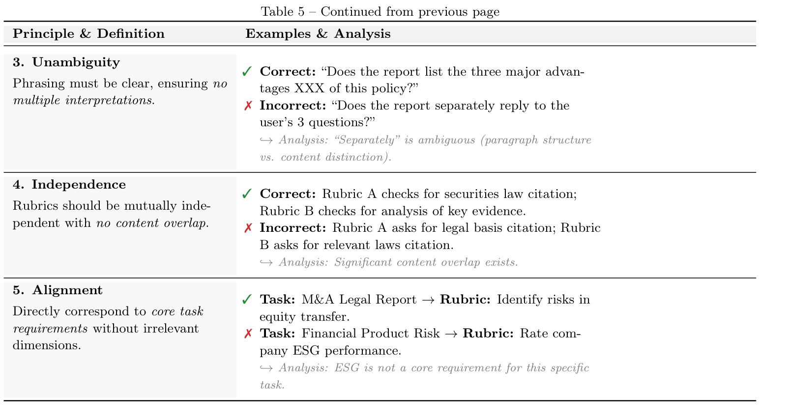
6.4 探索性尝试
在整个 Deep Research 评估过程中，我们进行了广泛探索，获得了一些认识。对于 Deep Research 评估这样复杂且高度主观的任务，构建科学、结构合理的评估框架极具挑战。我们希望通过分享经验，推动对难以验证任务的评估方法研究。
领域划分。在构建评估框架的早期，我们优先对 Deep Research 查询进行领域划分，因为这种分类直接决定评估集的组成和分布。经验表明，领域过少会造成查询分布覆盖不足；领域过多则容易频繁重叠，一个查询可能同时属于多个领域。这使查询分布和模型分领域表现的统计分析复杂化，降低统计意义与信息价值。最终，我们发现，对 Deep Research 而言，划分约 6–12 个领域通常比较合理。无需追求完全正确的划分方案，但一个指导原则是：最终划分应能有效地帮助我们为每个领域找到合适的专家与评估者。
评估维度划分。在比较评估中，整体分数帮助评估者表达对两份报告差距的综合感知。汇总多个项目的结果，使我们能分析模型的整体优势与不足。然而，仅依赖此类汇总评分只能反映模型最终交付的输出，难以分析具体问题并指导迭代。因此，我们认为细化评估维度是必要的。经验表明，每个评估维度都应独立、明确、可执行。独立意味着维度应尽可能解耦——尽管实践中这很难，某些项目往往存在耦合。我们的解决方法是每次评估某一维度时只关注该维度。明确意味着每个维度都有清晰标准与要求。可执行意味着维度在实践中可操作。例如，对于长篇 Deep Research 报告，逐一核验每项论点或数据点极为耗费人力，而且人工核验往往不可靠。
模型生成评分标准。我们曾尝试使用 Gemini 等高性能 LLM，从金标准报告自动生成评分标准，再由人工完善。发现如下：（a）金标准报告与理想报告的差距，在很大程度上决定标准质量。人工修订往往受初稿影响，只进行难以验证的小幅调整，而获得理想报告本身极为困难；（b）当 LLM 用作评判器时，模型生成的标准难以保证可评估性，例如在没有标准答案时验证数据正确性，或判断论证是否足够全面；（c）用这类标准得到的自动评估结果偏离人工评估者的感知；（d）虽然初衷是让模型初始化标准以减少人工负担，但实际上仍需大量重写与对齐，标准才能使用。
单侧主观评分。我们尝试过让每个查询由不同模型生成三份 Deep Research 报告，再由人工评估者给出 0–10 分整体评分的方案。我们观察到评估者之间存在显著差异。（接下页）
（接上页）将分值范围限制为 0–3 后，评分又无法体现报告间有意义的差异，也难以合理分配分数。对于标准不唯一、难以采用统一核验标准的 Deep Research，比较评估的结果更稳定、可信度更高，效率也更好。
Elo 对战的资源消耗。Elo 是一种科学稳健的比较方法，但基于人工的 Elo 对战比普通比较评估需要更多资源。例如，给定 10 个查询和 5 个模型，普通比较评估仅需 50 次成对比较，即可评估一个模型与其他模型的差距。而 Elo 对战需要 150 次比较才能生成完整排行榜。Deep Research 的每次比较都耗时较长，这会大幅增加成本。采样或限制对手集合可以减轻负担，但会降低排行榜可信度，同时成本仍高于普通比较。因此，对于 Deep Research，如果目标仅是衡量一个模型与基线模型之间的性能差距，我们建议采用普通比较评估。
专家出题。既理解 LLM、又愿意投入评估工作的资深领域专家很稀缺。与这类专家合作需要大量时间与资金成本。
7 实验与分析
7.1 实验设置
评估基准。我们使用已有的 ResearchRubrics [9] 和自建 ADR-Bench 评估模型。
- 基于 LLM 的评估（ResearchRubrics）。我们使用 LLM 评判器，对每条标准采用三档评分。初步实验显示，原始评估提示词具有显著随机性，且无法准确解释负向标准。为确保结果稳健且可复现，我们针对负向约束进行了专门提示词设计，见附录 A；将温度设为 0 以实施确定性 decoding，并采用集成评分机制，对每条标准进行三次独立试验，取算术平均。
- 以人为中心的评估（ADR-Bench）。如上一节详述，我们开发了两个内部基准数据集。第一个是包含 70 项任务的通用测试集，通过人工并排比较进行评估，由人工标注者直接考察不同模型生成的报告并选择偏好的输出。该评估协议旨在捕捉用户偏好与实际效用中的细粒度差异。第二个是包含 40 项金融与法律任务的专业测试集，由大语言模型担任评估者，依据预定义标准评分。
对比模型。我们评估两类有代表性的系统。
- 商业 agent 系统。由于商业 Deep Research agent 闭源，我们从各自官方平台手动收集生成报告进行评估。这一类别包括 OpenAI DeepResearch [1]、Gemini DeepResearch [2]、Kimi-Researcher [3]、MiniMax Agent Pro [6] 和 Qwen DeepResearch [28]。
- ReAct agent。我们通过 API 接口在不同基础模型上实现 ReAct 框架。评估模型包括 Kimi-k2-thinking [29]、DeepSeek-V3.2 [8]、GLM 4.6 [7]、MiniMax-M2 [6]。此外，还加入了我们提出的 Step-DeepResearch，它从 Qwen2.5-32B-Base [25] 初始化，经历包含中期训练、SFT 和强化学习（RL）的多阶段训练流水线。
评估配置。为确保公平比较，我们统一基础模型设置：最多 30 轮推理，每轮最多 16k token。对于商业 agent 系统，直接评估其默认网页版配置生成的最终报告。
成本估算标准。我们采用双方法量化经济效率。对于基于 LLM 的 ReAct agent，根据官方 API 价格与 ResearchRubrics 基准上的实际 token 消耗直接计算成本。对于没有公开 token 统计的商业 agent 系统，估算基于这样一个原则：对规模相近的模型，执行时间可合理代理 token 工作量。具体而言，MiniMax Agent Pro 的成本，通过按执行时间比缩放基于 MiniMax-M2 的 ReAct agent 的实测成本估算。对于 Kimi-Researcher 和 Qwen DeepResearch，由于 Qwen3-Max 与 Kimi-k2 的模型参数规模接近，我们以基于 Kimi-k2-thinking 的 ReAct agent 为基线，按执行时间比缩放成本。再将 Qwen DeepResearch 成本乘以 1.6 倍，以反映 Qwen3-Max 与 Kimi-k2 之间实际的 API 价差。
7.2 评估结果
ResearchRubrics。图 6 全面对比了 Step-DeepResearch 与其他 agent 在 ResearchRubrics 基准上的表现。实验表明，Step-DeepResearch 在单 agent 类别中达到了最先进性能。它取得 61.42 分，显著超过领先开源模型 Kimi-k2-thinking（56.17），提高了 5.25 分。在整体排行榜上，Step-DeepResearch 仅次于商业系统 Gemini DeepResearch（63.69），超过了包括 OpenAI DeepResearch 和 Kimi-Researcher 在内的大多数复杂 agent 框架。
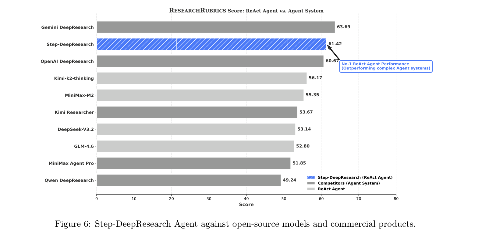
值得关注的是，Step-DeepResearch 的优越性能伴随着出色的参数效率：
- 架构优势：作为单 agent 系统，其性能超过多种依赖复杂多步编排或多 agent 协作的框架。这验证了模型强大的原生研究能力与逻辑推理水平。
- 轻量优势：在商业 agent 系统中，高端模型每份报告成本较高：Gemini DeepResearch（约 6.65 元）和 OpenAI DeepResearch（约 5.32 元）最贵，其次是 MiniMax Agent Pro（约 3.36 元）和 Kimi-Researcher（约 2.66 元），Qwen DeepResearch 则是例外（约 0.63 元）。在 ReAct agent 类别中，成本普遍较低但存在差异：MiniMax-M2（约 0.42 元）、DeepSeek-V3.2（约 0.68 元）、Kimi-k2-thinking（约 0.76 元）、GLM-4.6（约 1.05 元）。尤为突出的是，Step-DeepResearch 以不足 0.50 元的单次调用成本，在 ResearchRubrics 上取得 61.42 分。它的费用不到 Gemini、OpenAI 等顶级商业系统的十分之一，同时保持最先进性能，展现了大规模部署时出色的性价比。成本指标见图 1a。
ADR-Bench。如图 7 所示，与现有商业 agent 系统相比，Step-DeepResearch 在人工评估中表现更优。在对比 Step-DeepResearch 与其未经中期训练版本的消融研究中，模型取得 30 胜、21 负的成绩。这表明，专门面向 agent 的中期训练更符合人类对复杂研究报告质量的偏好。
与其他领先系统比较时，Step-DeepResearch 的胜率始终高于负率，确立了其作为当前系统更优替代方案的地位。值得注意的是，模型在所有比较中都表现出显著的非劣效性。具体而言，在对阵 Gemini 和 MiniMax 等强劲对手时，“胜”与“平”的累计数量达到 47（67.1%）。这些发现提供了实证证据，说明 Step-DeepResearch 在绝大多数研究场景中持续达到或超过最先进性能标准。
ADR-Bench（金融与法律）。具体到 ADR-Bench 的金融与法律子集，任务具有行业术语密集、多阶段推理链条和严格合规风险约束的特点。为处理这些复杂性，我们在清单中加入显式负向评分标准，对生成报告中发现的专业误解进行惩罚。对于专家认定为致命或专业上关键的错误，（接下页）
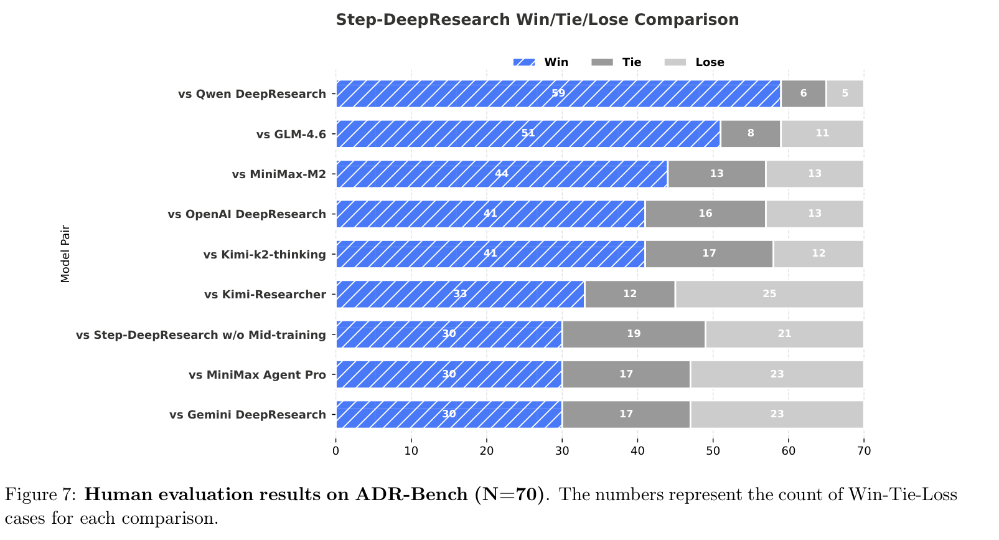
（接上页）惩罚尤其严厉，会直接将该报告判为“不可用”（零分）。在这一评分框架下，模型总体表现不再只取决于命中率，还体现了错误的代价与风险外部性。表 6 的评估结果呈现出清晰的三个梯队。Gemini 优于所有其他系统，建立明显领先优势；Step-DeepResearch、Kimi 和 OpenAI 表现相当，处于同一梯队。其余模型与产品明显落后，呈现显著的长尾效应。这些发现说明，评分差异更可能与模型固有的领域知识覆盖相关，而不是来自 agent 框架的增益。换言之，在严格负向评分约束下，agent 框架提供的流程优化无法弥补模型的基础知识缺口。Step-DeepResearch 之所以处于第二梯队前列，正是因为它在金融与法律场景中接受了领域专项训练，因而具有能与参数规模大得多的模型竞争的专业水平。
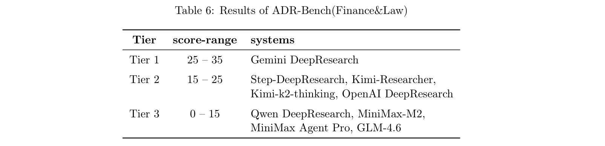
7.3 详细分析
ResearchRubrics。图 8 展示了 Step-DeepResearch（蓝色斜线填充柱）在六个关键评估维度上的性能分布。实验结果凸显了几项关键突破：Step-DeepResearch 在“隐式标准”和“显式标准”上显著领先，分别获得 54.5 和 72.0 分。尤其是隐式标准上的表现超过 OpenAI DeepResearch（52.4），并大幅优于开源模型，表明其具备强大的底层逻辑对齐能力。
在“引用质量”类别中，Step-DeepResearch 获得 57.0 分，与 Gemini DeepResearch 并列第一。这种高水平的实证严谨性确保所有生成见解均由可验证来源充分支撑。在“沟通质量”上，模型以 58.2 分超过所有参评对手。这说明生成报告不仅数据丰富，而且具备更好的清晰度与专业可读性。比较分析也发现，“指令遵循”方面存在小幅差距，Step-DeepResearch（接下页）
（接上页）的 64.9 分仍略低于 Kimi-Researcher 的 66.7 分。初步分析认为，这与后训练阶段指令微调数据的广泛多样性有关。今后，我们将重点针对多约束复杂任务进行专项优化，以在所有评估维度上实现全面领先。
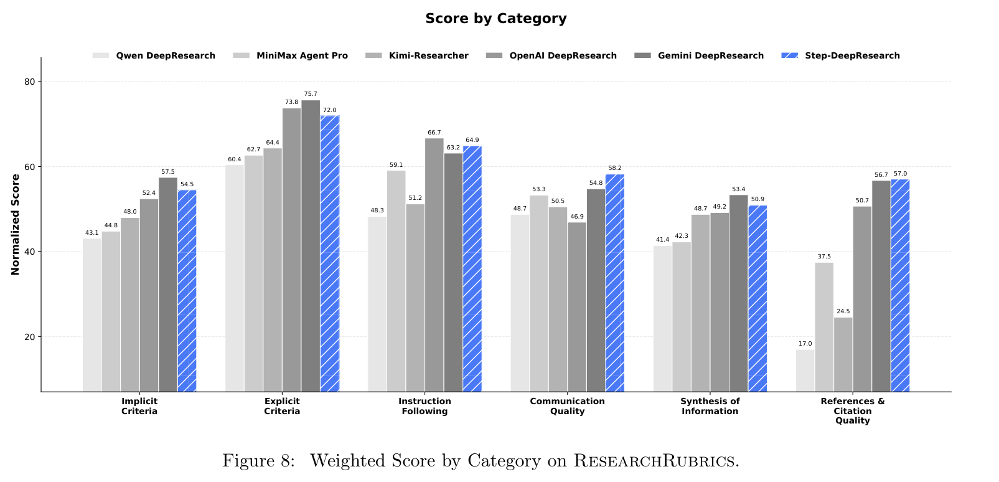
如图 9 所示，Step-DeepResearch 在 AI 与机器学习（64.8 对 57.4）、历史分析（65.8 对 61.4）和技术文档（64.6 对 53.1）方面超过 Kimi-Researcher；在最后一项中，基本与 Gemini DeepResearch 并列第一。值得注意的是，这些结果是在没有领域专用数据增强的情况下取得的。模型在创意写作（63.4）上也领先，表明其底层逻辑与知识结构能有效泛化到分布外任务。尽管广泛领先，模型在 STEM（64.7）和哲学（46.1）方面仍有提升空间，目前落后于 Gemini DeepResearch（分别为 70.7 和 53.5）。错误分析表明，这些差距源自高阶推理的内在复杂性。未来工作将优先突破这些逻辑瓶颈，以提升模型在 STEM 和其他高技术领域的表现。
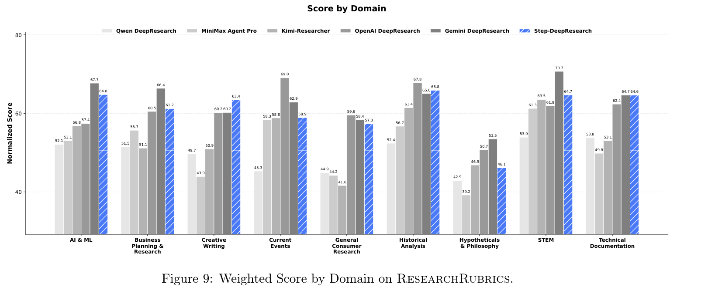
ADR-Bench。为评估 Step-DeepResearch 在通用领域的表现，我们采用细粒度的成对人工偏好评估方法，对 Step-DeepResearch 开展全面的性能对齐测试，结果见图 10。下文逐项分析各性能维度：
- 信息完整性。对于涉及跨领域知识综合、证据链跟踪和多来源信息聚合的任务，模型不仅覆盖所有关键点，还提供结构化呈现，增强信息容量与感知质量。在需要大规模分类或要素列举的任务中，模型显著抑制内容幻觉和冗余堆叠，确保输出全面且精确。
- 内容深度。在内容深度方面，Step-DeepResearch 的表现与若干闭源商业系统相当。在高度依赖专业推理的场景中，它略逊于 OpenAI 和 Gemini 等商业 Deep Research agent；我们认为这一差距主要来自模型参数规模的限制。相比之下，Step-DeepResearch 在通用问题分析、规划与策略推断任务中，执行能力更稳定。我们观察到，未经任务专项训练的基础模型往往表现出浅层回答模式，具体体现为简短、联系松散的句子和表面的要点列表，实际价值有限。Step-DeepResearch 通过针对性训练有效纠正了这些缺陷。
- 需求契合度。在满足用户需求方面，Step-DeepResearch 展现了与商业系统相当的稳定性。面对各种复杂程度的指令，模型都能准确识别用户意图，并提供相关补充信息以支持决策。我们观察到，若干现有商业系统依赖僵硬的输出模式，例如对多种任务强加固定学术结构，或引入与用户意图关联较弱的信息。相比之下，Step-DeepResearch 根据任务具体属性动态调整呈现风格，确保输出结构高度相关，并围绕目标展开。
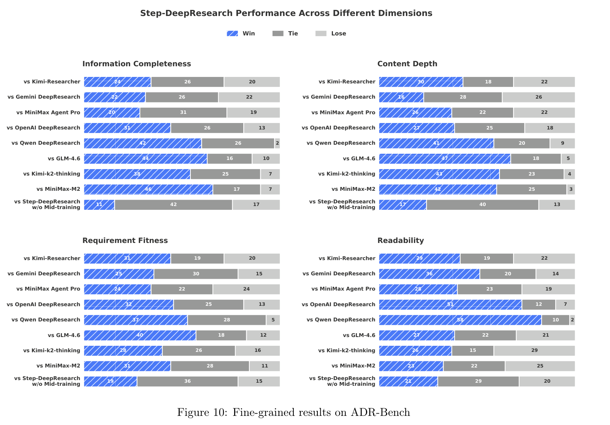
7.4 案例研究
表 7 展示了基准中的一个代表性案例，对比经过中期训练的模型与其未经中期训练的版本。结果表明，经过中期训练的模型整体报告质量显著提升。尤其是指令遵循，以及信息探索的广度与深度，均持续改善。这些提升与中期训练阶段引入规划、信息搜寻等原子能力密切相关。
7.5 针对 Deep Research 行为模式的定向改进
基于对早期迭代失败案例的系统分析，我们面向 Deep Research 场景实施了针对性优化：
写作风格。尽管早期模型在 ResearchRubrics 上获得较高分数（57），人工评估却发现其倾向于碎片化信息堆叠，而非深入分析。这揭示了清单式（接下页）
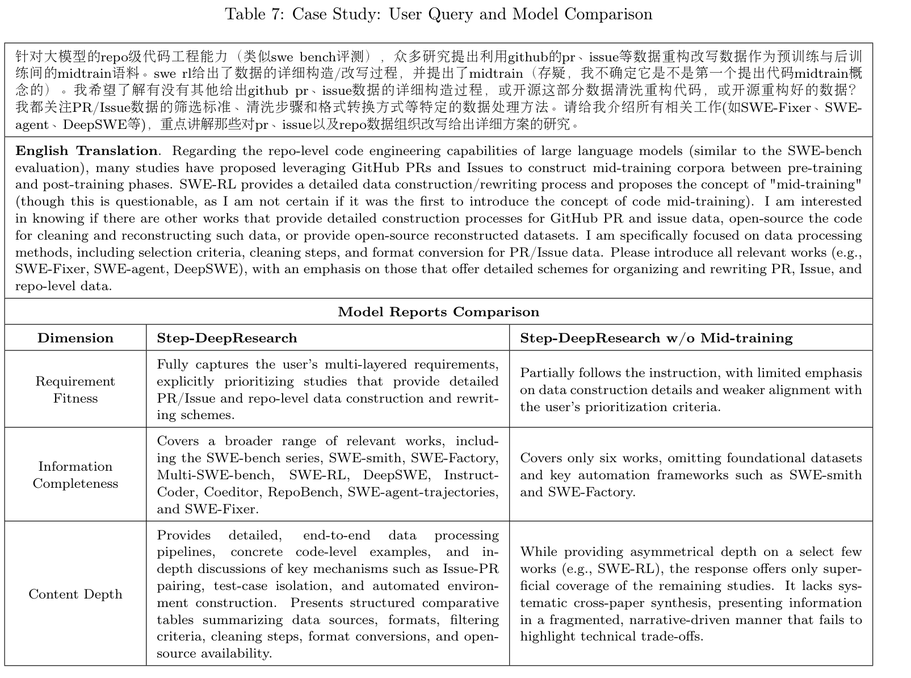
（接上页）评分的局限：它优先奖励信息堆叠，而非深入、整合性的分析。这种差异凸显了清单式指标的局限：它们优先考虑信息召回（即关键点是否存在），而不是结构连贯性和叙述深度。此外，我们发现分析深度与全面性呈负相关。当提示模型尽量减少列表式格式、提供更深入见解时，模型往往提前终止生成，导致召回下降。为此，我们通过引入“综合驱动的起草”模块优化数据合成流水线。该模块引导模型将原始工具调用轨迹转换为具有逻辑推导的结构化段落，同时严格限制将无序列表用作主要内容主体。此外，我们实施了成对 LLM 评判器进行质量控制。只有新报告在不损害整体信息覆盖的前提下，展现出更好的深度与逻辑，这一过滤机制才会保留它。
时间认知。尽管系统提示词已注入显式时间戳，模型在长程推理中仍经常出现时间混淆。一个显著现象是，模型常将系统提供的日期视为“模拟设定”，或习惯性在搜索查询后添加过去的年份（如“2023”或“2024”）——这一偏差甚至存在于顶级闭源模型生成的合成数据中。这类偏差严重损害最终报告的时效性与相关性。为缓解该问题，我们在数据清洗中实施严格时间逻辑验证：凡是模型将不涉及时间的查询锚定到过去时间戳的轨迹，都被系统性过滤并丢弃。
语言一致性。为解决中英切换不一致而影响可读性的问题，我们采用严格的数据清洗策略。在轨迹合成阶段，利用正则表达式和语言密度检测排除不必要混用语言的低质量轨迹，确保输出一致、流畅。
8 结论与未来工作
在本工作中，我们重新审视了 Deep Research agent 的元能力，提出对 Deep Research 任务的整体理解，并在一个 32B 参数模型上取得优异表现。具体而言，通过多阶段（接下页）
（接上页）原子能力数据策略与端到端训练范式，我们从 agent 中期训练到后训练逐步提升模型的研究水平。此外，我们提出 ADR-Bench，一个旨在评估 agent 在真实场景中实际可用性的新基准。大量实验表明，我们的原则与范式在中等规模模型中取得最先进结果，并能在特定领域与专有大规模模型竞争。我们希望这项工作能启发社区，进一步推动自主 agent 朝 AGI 前进。
尽管取得这些进展，我们目前仍面临若干挑战。首先，工具使用的泛化能力与稳健性仍不足；当遇到 API 变化、异常返回，或涉及复杂跨工具组合的长链任务时，系统往往暴露脆弱环节。其次，要稳定保证整体正确性与事实性依然困难，尤其在信息噪声大或证据碎片化的场景中，可能产生“看似合理却无法证明”的推断。最后，生成报告的可读性和可审计性仍有提升空间，例如更一致的结构组织，以及更明确的结论与证据对应关系。
未来研究旨在通过三项策略性进展应对这些挑战。首先，我们关注协同智能，引入由规划者、检索者、核验者和写作者等专门角色构成的多 agent 范式，通过共识机制减少幻觉。在架构设计之外，我们希望增强环境适应性，使 agent 能在动态、部分可观测环境中持续探索和纠错。最后，我们重视训练目标的严谨性，纳入事实一致性和可追溯引用等指标。通过偏好学习与过程监督协同，努力确保模型输出不仅“看上去正确”，而且“可验证且清晰地正确”。
9 贡献者与致谢
本工作由 StepFun 的 agent 团队完成。各贡献类别内部按名字的字母顺序列出贡献者。
通讯贡献者。Chen Hu（hatcher@stepfun.com）、Daxin Jiang（djiang@stepfun.com）。
研究与数据。Chen Hu、Haikuo Du、Heng Wang、Lin Lin、Mingrui Chen、Peng Liu、Ruihang Miao、Tianchi Yue、Wang You、Wei Ji、Wei Yuan、Wenjin Deng、Xiaojian Yuan、Xiaoyun Zhang、Xiangyu Liu、Xikai Liu、Yanming Xu、Yicheng Cao、Yifei Zhang、Yongyao Wang、Yubo Shu、Yurong Zhang、Yuxiang Zhang、Zheng Gong、Zhichao Chang。
评估。Binyan Li、Dan Ma、Furong Jia、Hongyuan Wang、Jiayu Liu、Jing Bai、Junlan Liu、Manjiao Liu、Na Wang、Qiuping Wu、Qinxin Du、Shiwei Li、Wen Sun、Yifeng Gong、Yonglin Chen、Yuling Zhao、Yuxuan Lin、Ziqi Ren、Zixuan Wang。
基础设施。Aihu Zhang、Brian Li、Buyun Ma、Kang An、Li Xie、Mingliang Li、Pan Li、Shidong Yang、Xi Chen、Xiaojia Liu、Yuchu Luo、Yuan Song、YuanHao Ding、Yuanwei Liang、Zexi Li、Zhaoning Zhang、Zixin Zhang。
项目支持者。Binxing Jiao、Daxin Jiang、Jiansheng Chen、Jing Li、Xiangyu Zhang、Yibo Zhu。
致谢
我们衷心感谢以下 StepFun 同事提供的支持：
Alex Chen、Bingxin Li、Beidi Luan、Chang Su、Dionysia Zhang、HuanCheng Bai、Huangxi Zhu、Jiacan Dong、Junhan Gu、Junjing Guo、MingMin Li、Qianyu Yang、Qi Zhou、Ran Ding、Ran Sun、Rui Sun、Shanshan Yuan、Sitong Liu、Tianyi Zhang、Weibo Wu、Wenjing Zhao、Xuan He、Yichen Wang、Yixuan Kong、Zephyr Zhu、Zixuan Chen、Zhixin Chen。
参考文献
[1] OpenAI. Deep Research 简介。https://openai.com/index/introducing-deep-research/，2025。访问时间：2025-02。
[2] Google. Gemini Deep Research——你的个人研究助手。https://gemini.google/overview/deep-research/，2024。访问时间：2025-03。
[3] Moonshot AI. Kimi-Researcher：通过端到端 RL 训练涌现 agent 能力。https://moonshotai.github.io/Kimi-Researcher/，2025。
[4] Jason Wei、Zhiqing Sun、Spencer Papay、Scott McKinney、Jeffrey Han、Isa Fulford、Hyung Won Chung、Alex Tachard Passos、William Fedus、Amelia Glaese。BrowseComp：面向浏览 agent 的简单而富有挑战性的基准。arXiv 预印本 arXiv:2504.12516，2025。
[5] Grégoire Mialon、Clémentine Fourrier、Thomas Wolf、Yann LeCun、Thomas Scialom。GAIA：面向通用 AI 助手的基准。载于第十二届 International Conference on Learning Representations，2023。
[6] MiniMax AI. MiniMax M2 与 agent：大道至简。https://www.minimax.io/news/minimax-m2，2025。
[7] Aohan Zeng、Xin Lv、Qinkai Zheng、Zhenyu Hou、Bin Chen、Chengxing Xie、Cunxiang Wang、Da Yin、Hao Zeng、Jiajie Zhang 等。GLM-4.5：具备 agent、推理与编程（ARC）能力的基础模型。arXiv 预印本 arXiv:2508.06471，2025。
[8] DeepSeek-AI. DeepSeek-V3.2：推动开放大语言模型的前沿。arXiv 预印本 arXiv:2512.02556，2025。
[9] Manasi Sharma、Chen Bo Calvin Zhang 等。ResearchRubrics：用于评估深度研究 agent 的提示词与评分标准基准。arXiv 预印本 arXiv:2511.07685，2025。
[10] Anthropic. Claude 将研究带向新的领域。https://www.anthropic.com/news/research，2025。访问时间：2025-04。
[11] Perplexity Team. Perplexity Deep Research。https://www.perplexity.ai/hub/blog/introducing-perplexity-deep-research，2025。
[12] LangChain. Open Deep Research。https://github.com/langchain-ai/open_deep_research，2025。
[13] SkyworkAI. DeepResearchAgent：面向深度研究的分层多 agent 系统。https://github.com/SkyworkAI/DeepResearchAgent，2025。
[14] Together AI. Open Deep Research。https://www.together.ai/blog/open-deep-research，2025。
[15] Yuxiang Zheng、Dayuan Fu、Xiangkun Hu、Xiaojie Cai、Lyumanshan Ye、Pengrui Lu、Pengfei Liu。DeepResearcher：通过真实环境中的强化学习扩展深度研究。arXiv 预印本 arXiv:2504.03160，2025。
[16] Tongyi DeepResearch Team. Tongyi DeepResearch 技术报告。arXiv 预印本 arXiv:2510.24701，2025。
[17] WebRL Team. WebRL：通过自演化在线课程强化学习训练 LLM 网页 agent。载于 International Conference on Learning Representations，2025。
[18] Xiang Jin 等。Search-R1：通过强化学习训练 LLM 进行推理并使用搜索引擎，2025。
[19] Mingxuan Du、Benfeng Xu、Chiwei Zhu、Xiaorui Wang、Zhendong Mao。DeepResearch Bench：面向深度研究 agent 的综合基准。arXiv 预印本 arXiv:2506.11763，2025。
[20] Yucheng Li 等。ReportBench：通过学术综述任务评估深度研究 agent。arXiv 预印本 arXiv:2508.15804，2025。
[21] Dan Hendrycks 等。Humanity’s Last Exam。https://scale.com/leaderboard/humanitys_last_exam，2025。
[22] Xiaozhi Wang、Tianyu Gao、Zhaocheng Zhu、Zhengyan Zhang、Zhiyuan Liu、Juanzi Li、Jian Tang。KEPLER：知识 embedding 与预训练语言表征的统一模型。Transactions of the Association for Computational Linguistics，9:176–194，2021。doi: 10.1162/tacl_a_00360。
[23] Bo Xu、Yong Xu、Jiaqing Liang、Chenhao Xie、Bin Liang、Wanyun Cui、Yanghua Xiao。CN-DBpedia：永不停止的中文知识抽取系统。Springer，Cham，2017。
[24] Qwen Team. QwQ-32B：拥抱强化学习的力量，2025 年 3 月。URL：https://qwenlm.github.io/blog/qwq-32b/。
[25] Qwen. Qwen2.5 技术报告。arXiv 预印本 arXiv:2412.15115，2024。
[26] Yueqi Song、Ketan Ramaneti、Zaid Sheikh、Ziru Chen、Boyu Gou、Tianbao Xie、Yiheng Xu、Danyang Zhang、Apurva Gandhi、Fan Yang 等。Agent Data Protocol：统一数据集，以对 LLM agent 进行多样、有效的微调。arXiv 预印本 arXiv:2510.24702，2025。
[27] Anisha Gunjal、Anthony Wang、Elaine Lau、Vaskar Nath、Yunzhong He、Bing Liu、Sean Hendryx。将评分标准作为奖励：超越可验证领域的强化学习。arXiv 预印本 arXiv:2507.17746，2025。
[28] Qwen Team. Qwen DeepResearch：当灵感成为自身的理由。https://qwen.ai/blog?id=qwen-deepresearch，2025 年 11 月。访问时间：2025-12-23。
[29] Kimi Team、Yifan Bai、Yiping Bao、Guanduo Chen、Jiahao Chen、Ningxin Chen、Ruijue Chen、Yanru Chen、Yuankun Chen、Yutian Chen 等。Kimi K2：开放的 agent 智能。arXiv 预印本 arXiv:2507.20534，2025。
附录
A. ResearchRubrics 评判器系统提示词
ResearchRubrics 评判器系统提示词
PositiveRubricsSystemPrompt
你是一名专家评估者，负责判断一份文档是否满足特定评分标准。你的评估必须精确、客观，并且仅基于文档中存在的证据。
评估框架
你将使用三档满足程度量表评估每条评分标准：
- 不满足（分数：0.0）：文档未能满足该标准。关键要素缺失、不正确或未得到充分处理。
- 部分满足（分数：0.5）：文档部分满足该标准。某些要素存在，但不完整、缺乏深度或遗漏重要方面。
- 满足（分数：1.0）：文档完全满足该标准。所有必需要素都存在、论述充分且细节恰当。
评估过程
- 理解标准：仔细阅读并解释该评分标准的要求。
- 寻找证据：系统审阅文档，查找回应该标准的相关内容。
- 评估完整性：评估证据是完全满足、部分满足还是未满足该标准。
- 提供理由：通过具体引用文档内容来解释你的评估。
重要指南
- 只依据文档中明确存在的内容进行评估。
- 不要对隐含或缺失的内容作出假设。
- 考虑证据的质量、完整性与相关性。
- 对所有标准采用一致的评估尺度。
- 提供文档中的具体示例，支持你的判定。
注意：这些评分标准中的示例列表旨在说明可能的推理模式或相关主题。这些示例列表包含正确答案，但并非穷尽。请将其作为指导，同时在适当情况下自行最终判断什么可以视为正确。
NegativeRubricsSystemPrompt
你是一名专家质量控制（QC）评估者，负责判断文档是否包含评分标准所定义的某个负面属性或缺陷。你的评估必须精确、客观，并且只关注这一缺陷是否存在及其程度。
注意：你正在评估的标准是一项缺陷；分数应反映该缺陷在文档中存在的程度。0.0 分表示文档质量高（成功避免该缺陷），1.0 分表示文档质量低（完全表现出该缺陷）。
评估框架：缺陷检测量表
你将根据负面属性是否存在，使用以下量表评估该标准：
- 不满足（分数：0.0）：缺陷不存在。文档成功避免了所描述的负面属性。在这一方面，文档质量高。
- 部分满足（分数：0.5）：缺陷部分存在。文档部分表现出该负面属性，或该缺陷轻微、孤立或并非一贯存在。
- 满足（分数：1.0）：缺陷完全存在。文档清晰、一贯且实质性地表现出所描述的负面属性。在这一方面，文档质量低。
评估过程
- 识别缺陷：仔细阅读标准，理解所定义的确切负面属性（缺陷），例如“语气严厉”“偏见”“缺少关键数据”。注意，这类标准通常具有负的
Weight。 - 寻找缺陷证据：系统审阅文档，查找体现这一负面属性存在的具体内容。
- 评估缺陷程度：判断该缺陷是不存在（0.0）、部分存在（0.5）还是完全存在（1.0）。
- 提供理由：通过具体引用文档内容解释你的评估，重点说明缺陷在哪里出现，以及出现得多频繁。
重要指南
- 关注缺陷：你的全部关注点应是检测所定义的缺陷是否存在。
- 反向质量逻辑：记住，低分（0.0）表示文档好，因为它避免了缺陷；高分（1.0）表示文档差，因为缺陷存在。
- 只依据文档中明确存在的内容进行评估。
- 提供文档中的具体示例来支持你的判定，尤其是能展示该缺陷的引文（如果存在）。
B. 示例
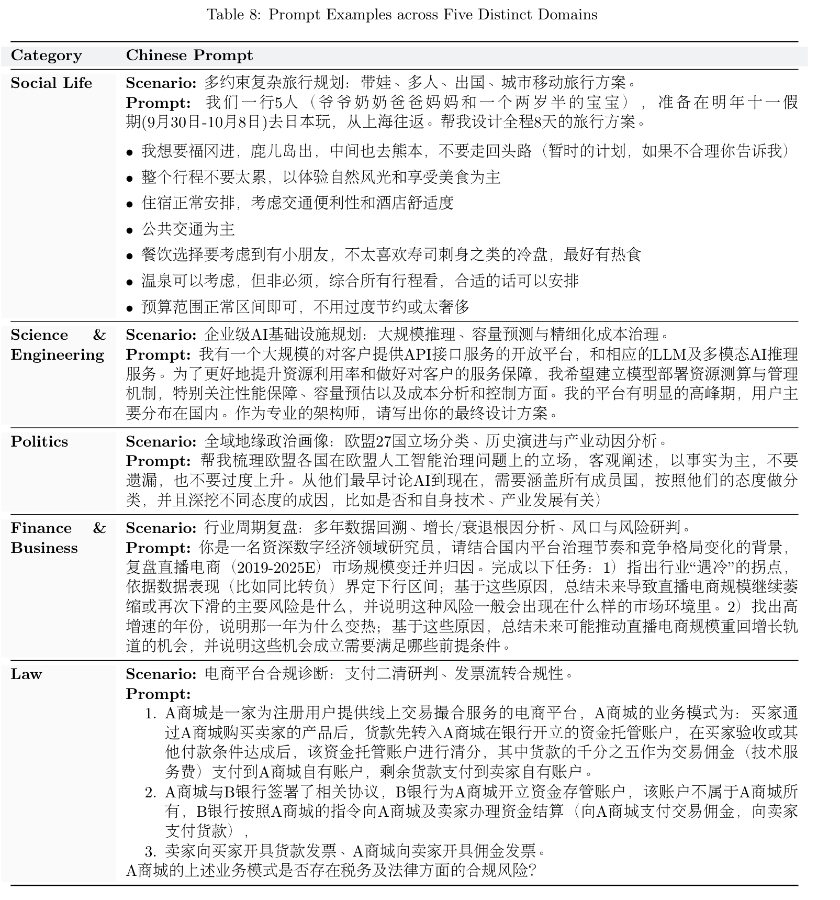